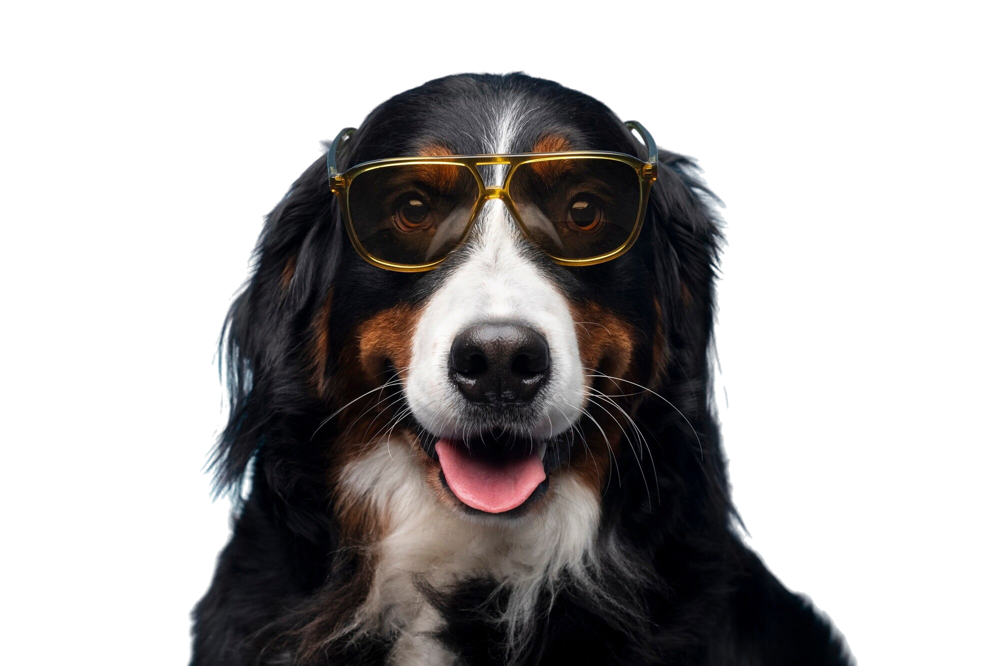
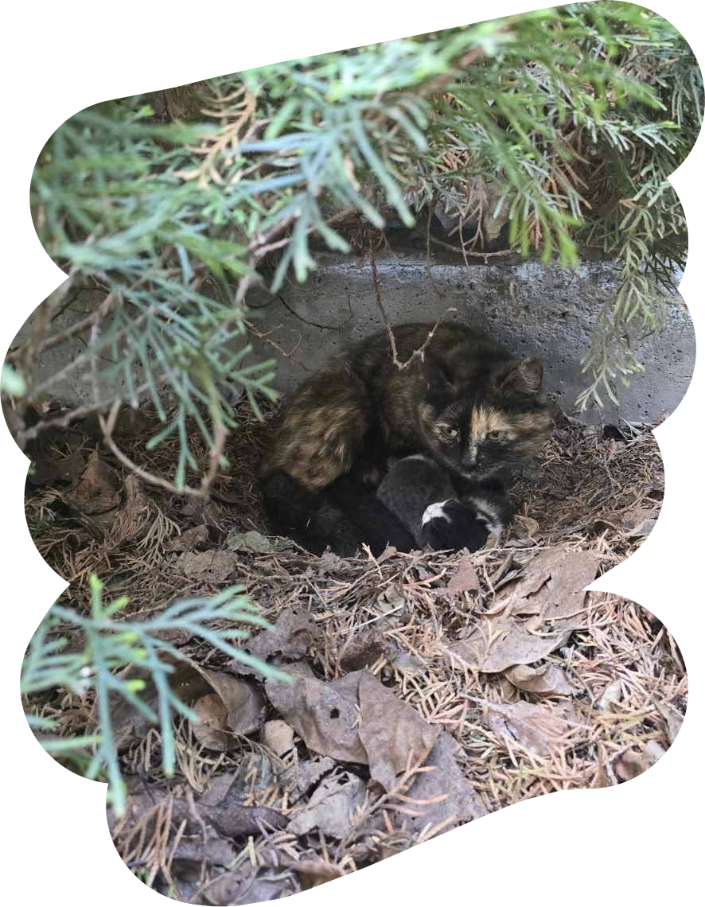
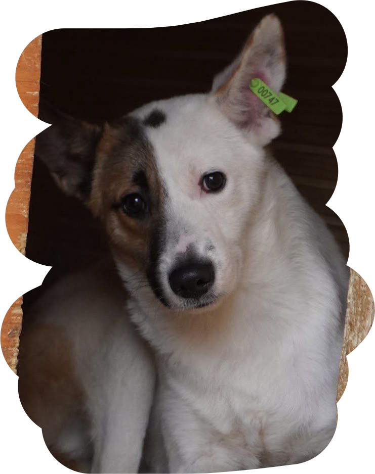
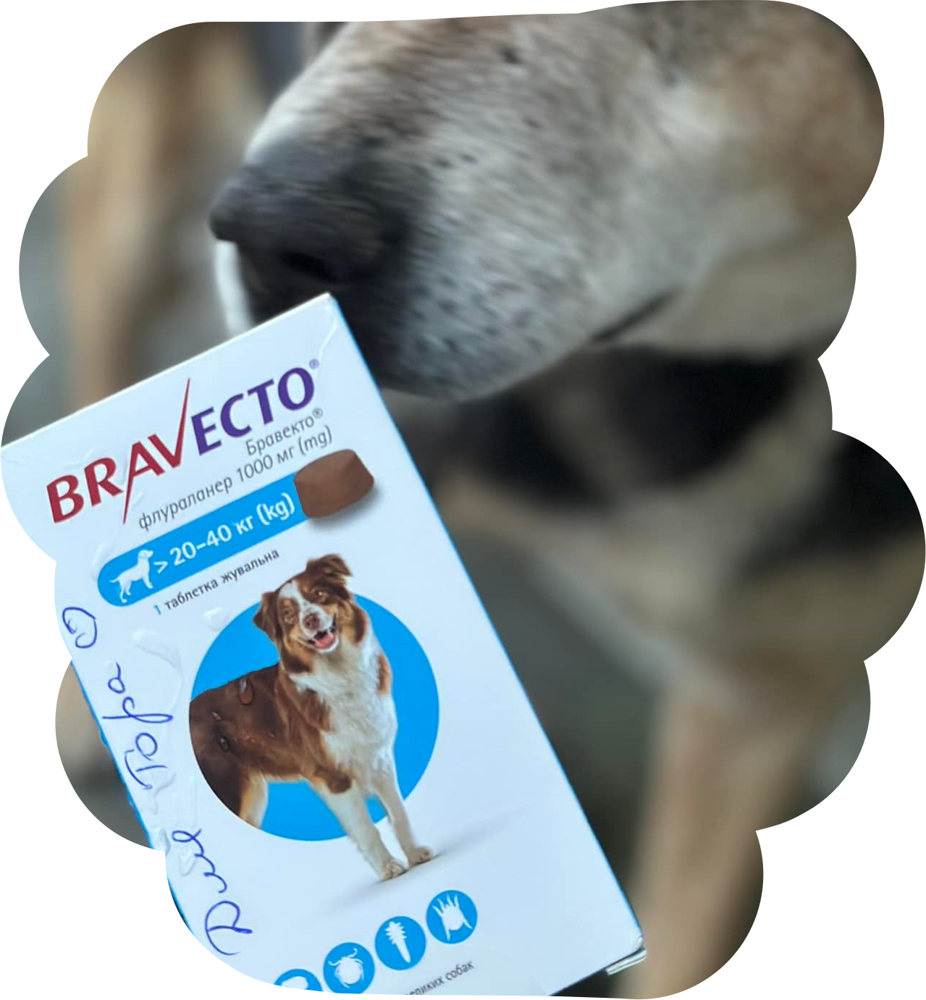
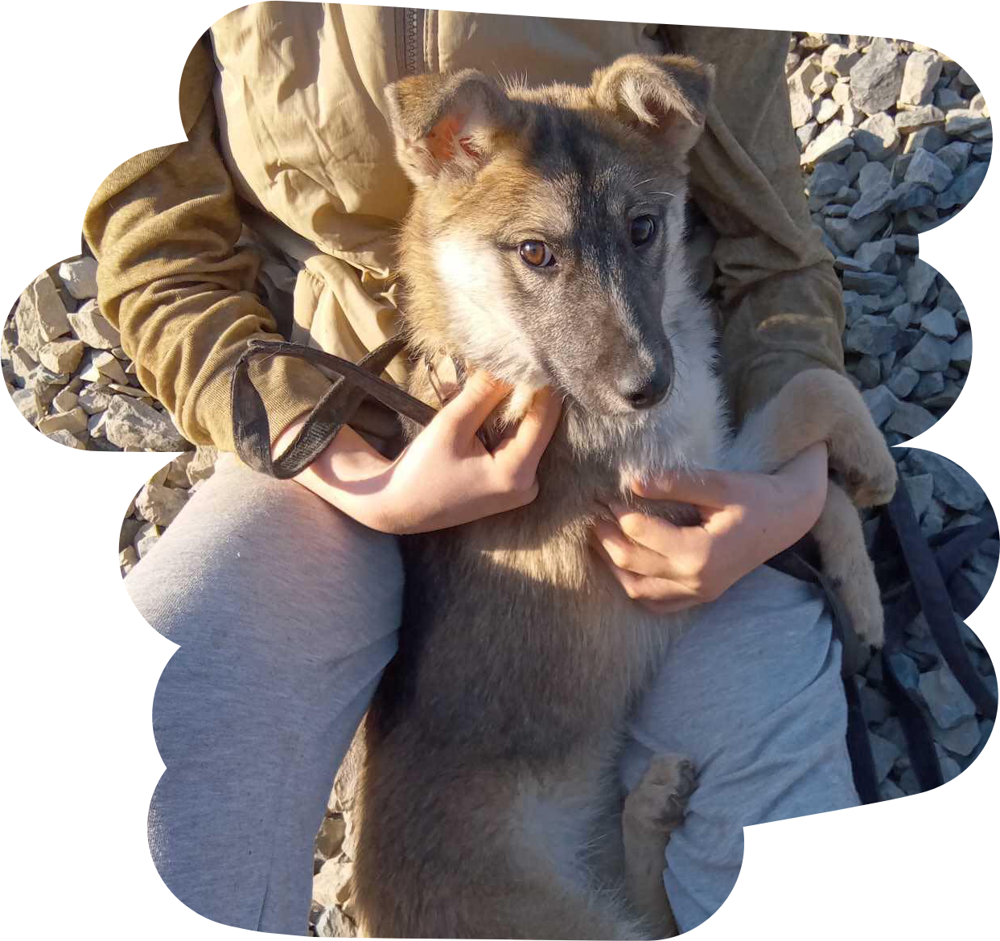
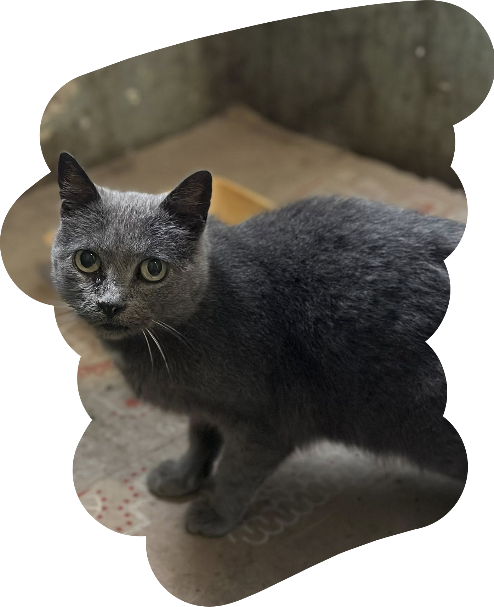
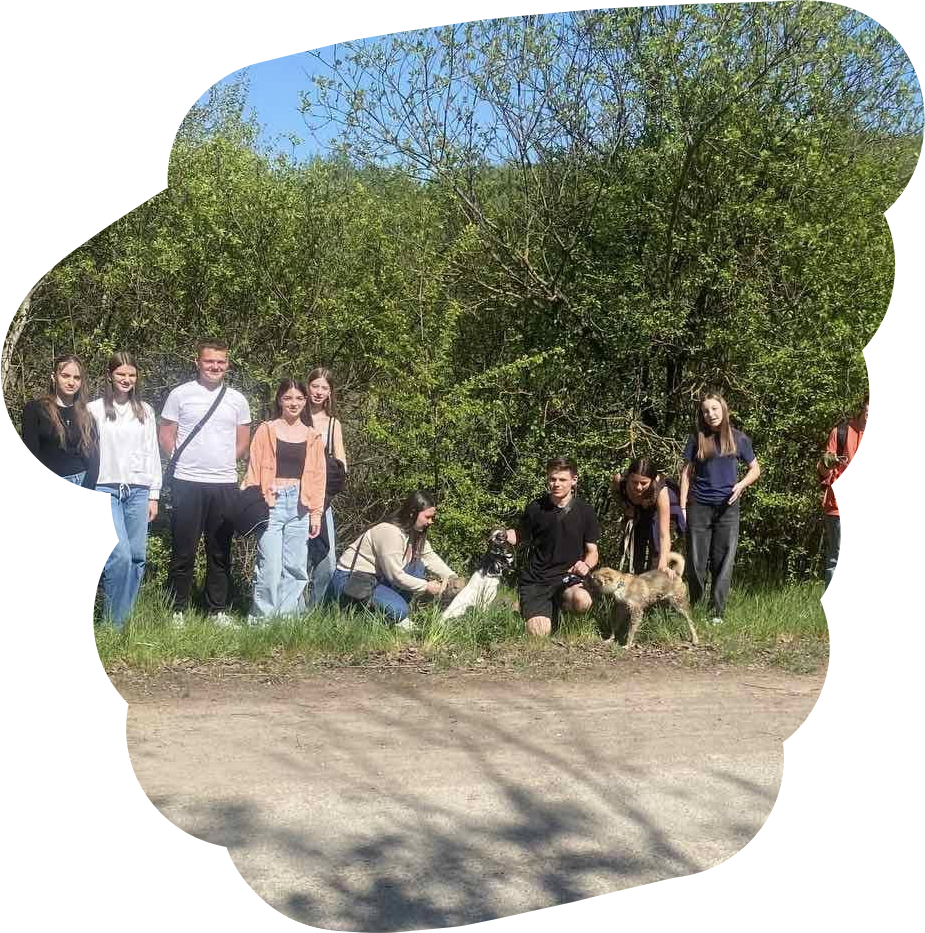
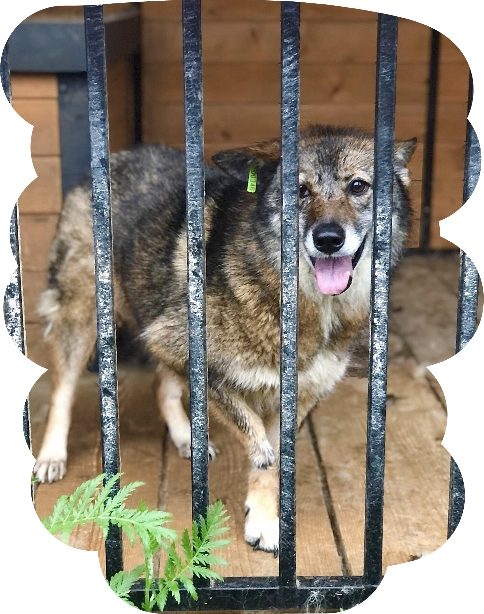
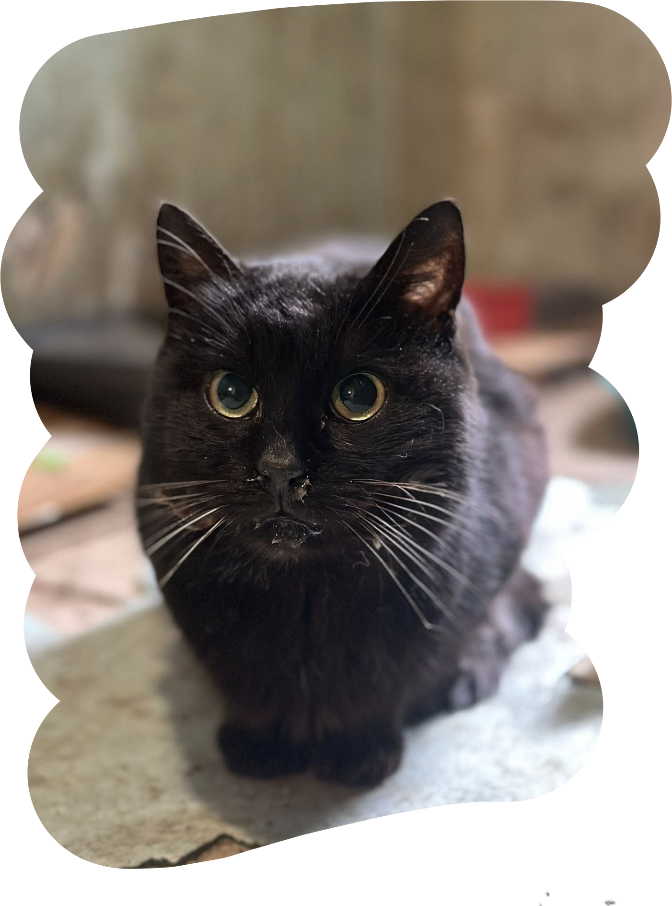

Вусаті новини
Ласкаво просимо на сторінку новин, де кожен пухнастик має своє слово!

Терміново потрібна перетримка!

Він ще зовсім юний…

ОНОВЛЕННЯ - Бравекто для гідусика передали!

Вона чекала... і продовжує чекати

ОНОВЛЕННЯ - кошти на таблетки для котусиків є!

Гарний, плідній вівторок!

КРИТИЧНА СИТУАЦІЯ!

Повний розпач від побаченого...